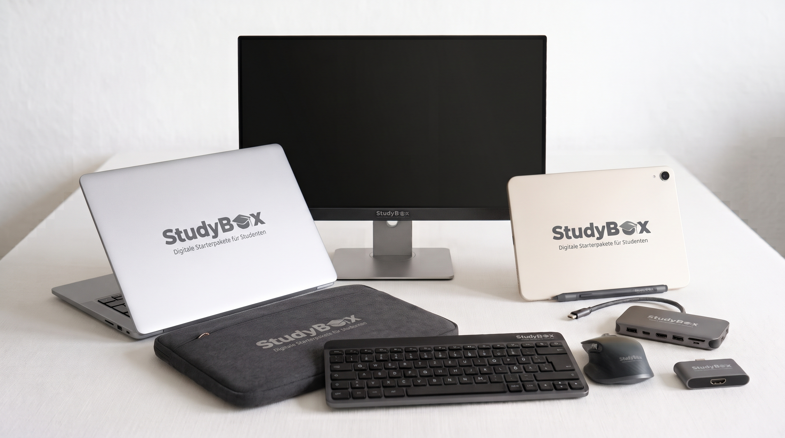
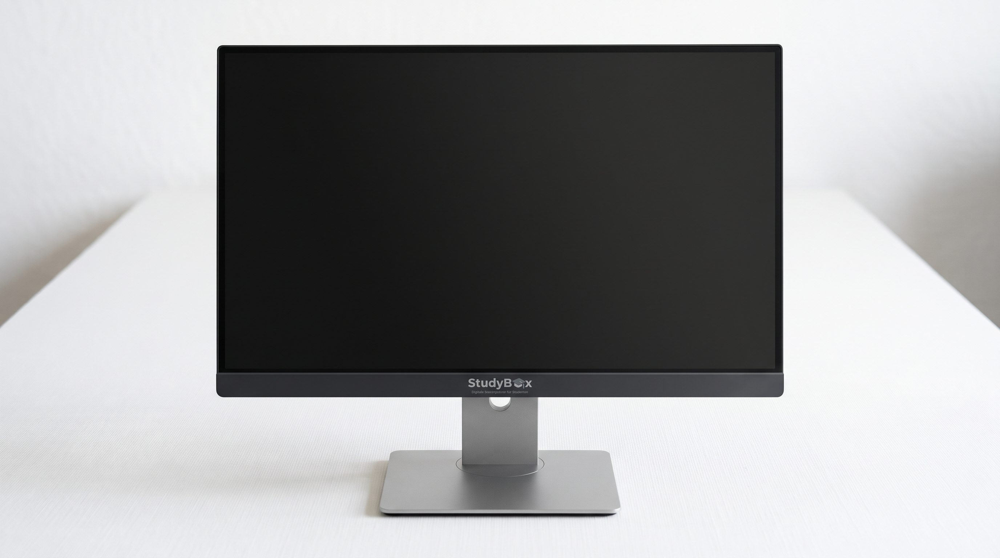

Lea M.
★★★★★
Mit Notebook und Monitor kann ich Bildbearbeitung und Layoutarbeiten gut erledigen. Für kreative Projekte ist die Zusammenstellung sehr praktisch.

Das Medien & Gestaltung Bundle wurde speziell für kreative und mediennahe Studiengänge entwickelt. Es unterstützt dich bei Grafikdesign, Bildbearbeitung, Videoprojekten, Content Creation, digitalen Medienproduktionen sowie der Entwicklung kreativer Konzepte.
Kreative Studiengänge arbeiten häufig mit Grafikprogrammen, Videosoftware, Präsentationen und umfangreichen Projektdateien. Das Medien & Gestaltung Bundle bietet die notwendige Ausstattung, um kreative Ideen professionell umzusetzen und Projekte effizient zu bearbeiten.

Das Notebook bildet die zentrale Arbeitsplattform des Bundles. Es eignet sich für Bildbearbeitung, Grafikdesign, Videobearbeitung, Layoutgestaltung und kreative Projekte.

Der große Monitor ermöglicht präzises Arbeiten an Layouts, Grafiken, Videos und digitalen Designs.

Das Tablet eignet sich hervorragend für Skizzen, Storyboards, digitale Notizen, Moodboards und kreative Ideen.

Der Eingabestift ermöglicht präzises Zeichnen, Illustrieren und Bearbeiten digitaler Inhalte.

Die Tastatur unterstützt das komfortable Erstellen von Präsentationen, Projektberichten, Konzepten und kreativen Dokumentationen.

Die ergonomische Maus ermöglicht präzises Arbeiten in Designprogrammen und unterstützt einen effizienten Workflow bei kreativen Projekten.

Die Dockingstation verbindet Monitor und weitere Geräte über eine zentrale Schnittstelle und unterstützt professionelle kreative Arbeitsplätze.

Bilder, Videos, Designs und Projektdateien benötigen oft viel Speicherplatz. Die externe Festplatte bietet ausreichend Kapazität für kreative Arbeiten und wichtige Backups.

Die gepolsterte Laptoptasche schützt Notebook und Zubehör beim Transport zwischen Hochschule, Studio, Agentur und Zuhause.
Mit Notebook und Monitor kann ich Bildbearbeitung und Layoutarbeiten gut erledigen. Für kreative Projekte ist die Zusammenstellung sehr praktisch.
Das Tablet mit Stift ist super für Skizzen und erste Entwürfe. Projektdateien und Backups lassen sich außerdem gut auf der externen Festplatte ablegen.
Eine hilfreiche Ausstattung für meine Medienprojekte. Besonders beim Arbeiten mit mehreren Programmen ist der zusätzliche Monitor nützlich.